PerF is an web application meant to effectively manage real estate transaction. The system allows the menagement of buildings,apartments,lands that are for selling/renting. We also offer information about price, description, coordinates, contact date, etc. We are using a localization service (Google Map).
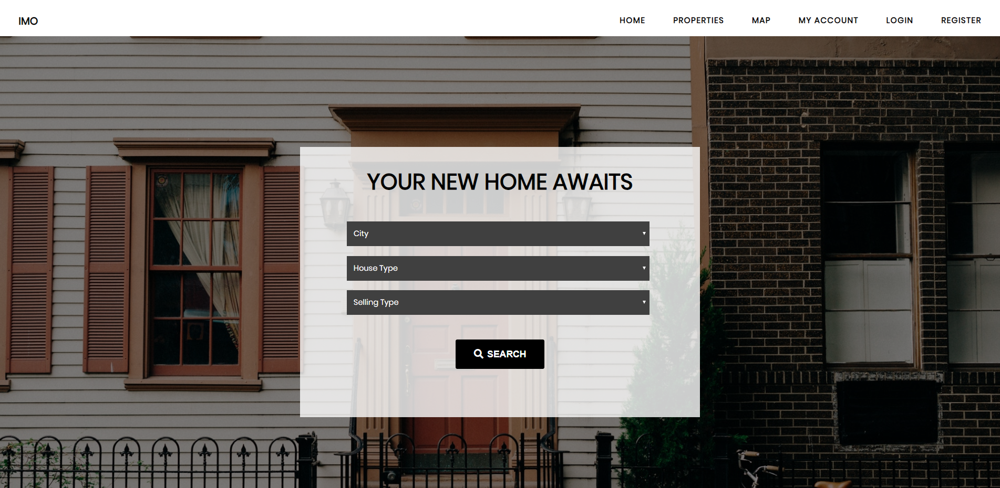In order to have access to our website, you need to create an account..
Right on the first page you can see the latest 6 announcements and it gives you the possibility to search for the right property for you!
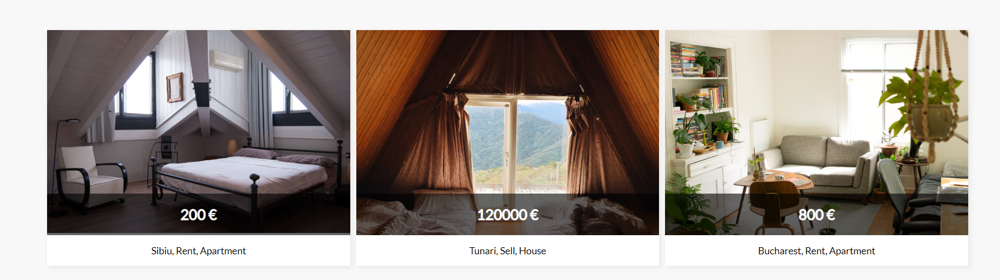 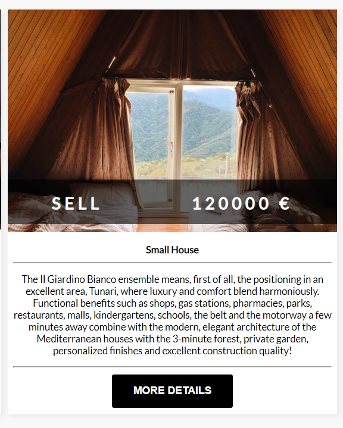Having plenty of filters to choose from, you can now find the perfect apartment to rent, the best house to buy or even a land to rent.
You can find this filter area in the header of the Home page or the Properties page.
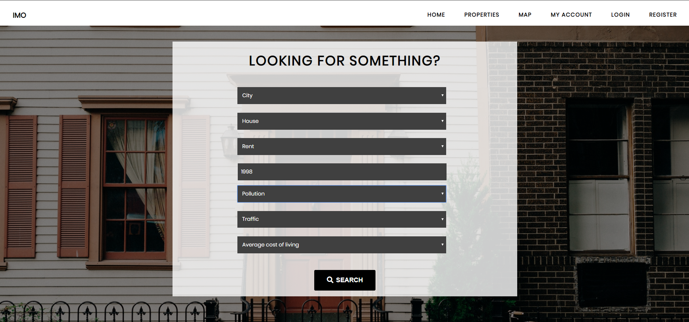As you may want to have a list a property of your own that you want to sell or rent out, we got you covered with an Add new announcement option. You just have to think of an interesting title to chatch your possible customers' eye, fill in some more specific details about the property you want to rent out/sell, add some photos, click the Submitbutton and you're all set!
Your property is now listed among the other announcements. You can see it in the Properties page, on your profile and on the Home page
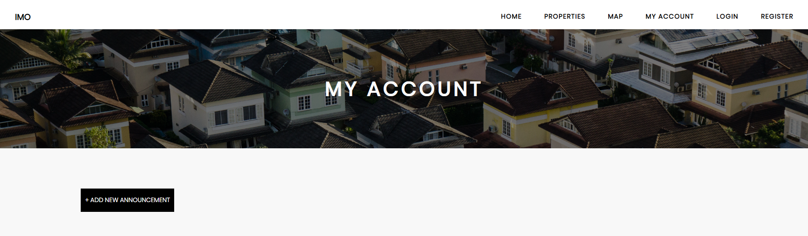 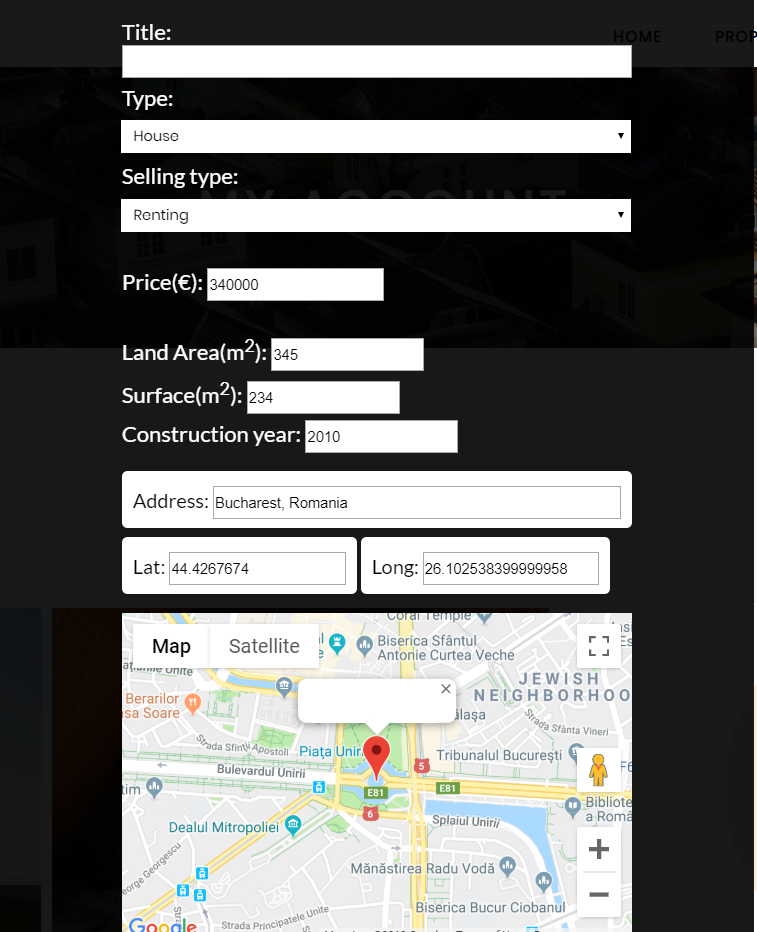 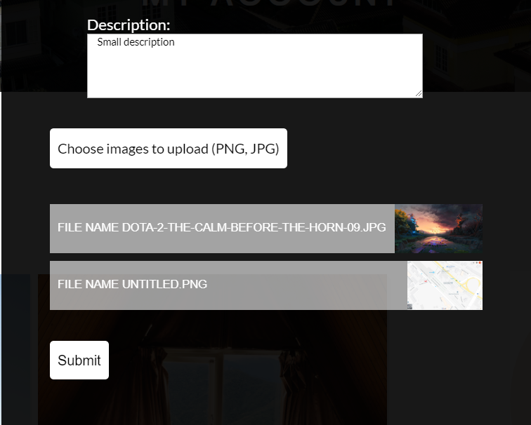If you managed to sell/rent out your property and you no longer want the announcement to be shown, you can Delete it, using the button placed on the announcement card in your account page.
After the announcement is removed, a message will show up that it was successfully deleted
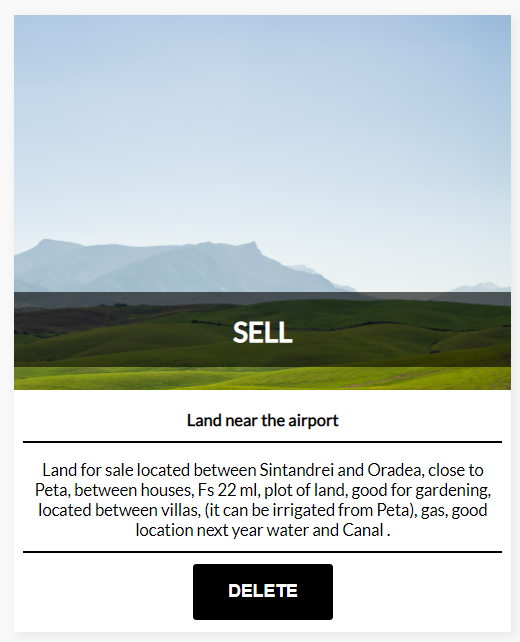At the end of the Property Details page, you can also see a Google Map that has a mark on it. The mark represents the exact location the the property you're currently seeing
You can also use Street View to move around the area and see the zone better.
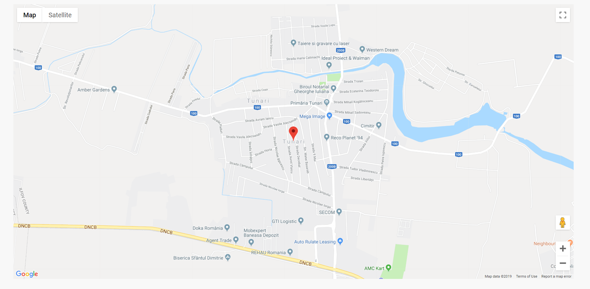You can access a map that has markers for all the properties listed on our Website.
If you want to see all the properties located in a specific area, just use the search box above the map.
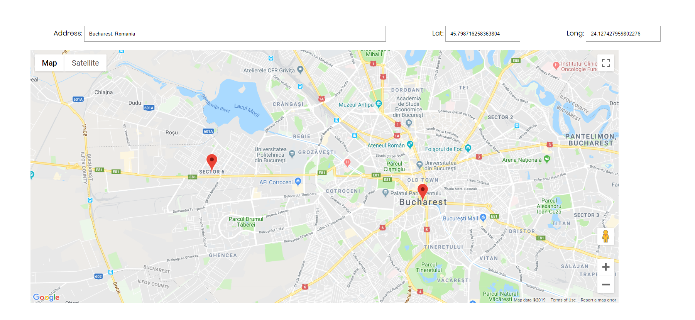When a user adds an announcement, he has the possibility to choose the address that the property he is listing is located. Automatically, a red marker is placed on the map found on the Details page and also the map that contains all of the properties' markes, found on the Map page.
You can also click on the marker to see the name and the price of the property listed under that address.
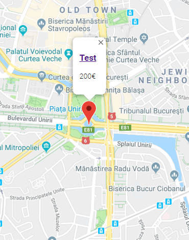Calarasu Teodora-Catalina
Pantiru Gabriel Alexandru
Tesu Cristina